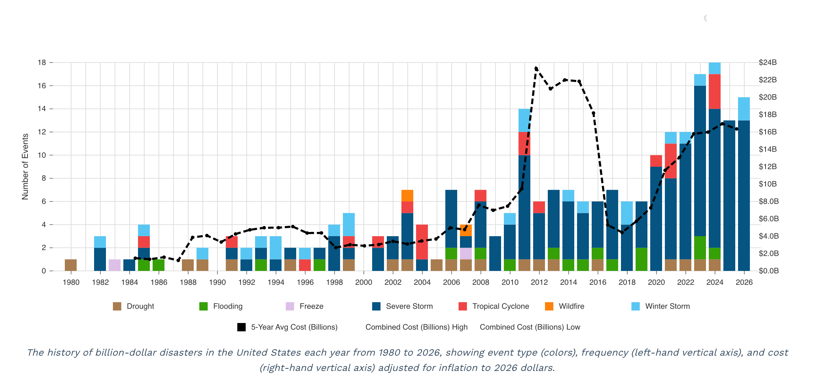
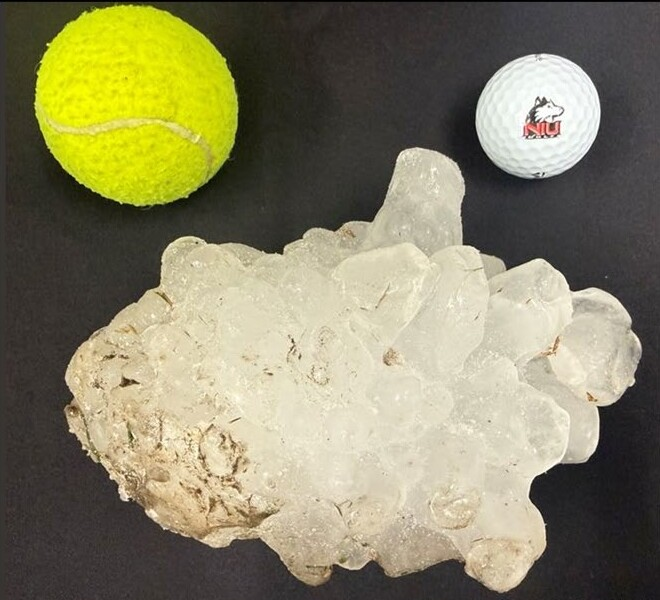
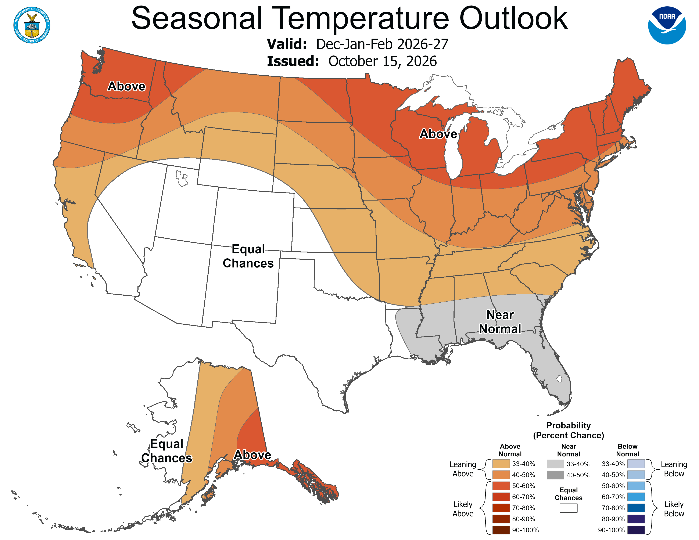
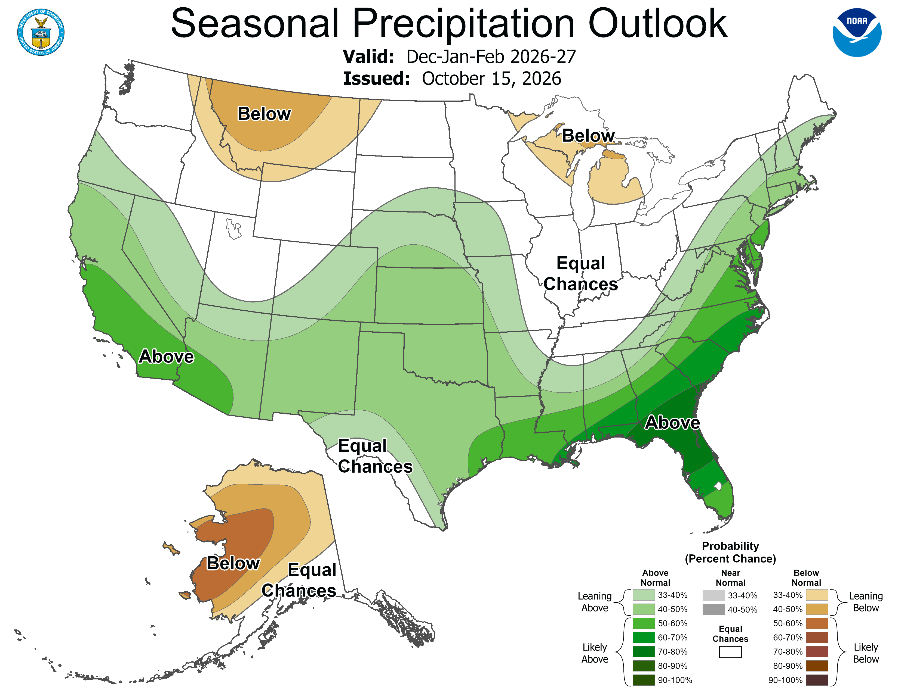

Community climate resource · DeKalb and surrounding northern Illinois
Northern Illinois Weather & Climate
What has our region experienced—and what might be changing?
Explore observations from northern Illinois, southern Wisconsin, eastern Iowa, and northwestern Indiana. Prepared for DeCarbon DeKalb’s “What’s Coming for Northern Illinois?” community conversation, November 4, 2026.
On a phone, swipe across a map to view both time periods, or tap the map to see the full-size image.
Weather, climate, and our communities
Why should we care about climate change?
We exist in the atmosphere, and live with the impacts of weather every day. Despite having generally comfortable indoor lives, we decide how to dress and plan recreation, agricultural activities, shipping, logistics, and construction projects around the weather and the typical climate for our area.
In addition to health and safety, weather and climate have a massive impact on economics. Billion-dollar weather and climate disasters due to flooding, severe storms, and other hazards have been increasing over the last 40 years. In the Great Lakes region, the costliest hazard in recent years has been severe storms. The effects of climate change drive broad and complex issues that impact individuals, businesses, and communities.
Billion-dollar weather and climate disasters in the Great Lakes region

The chart includes 2026 data to date, not a complete year. Growing disaster losses represent changes in climate, population, development, property values, and exposure.
Severe thunderstorms, tornadoes, hail and wind · 1986–2025
How have severe thunderstorms changed in our region, and what might the future bring?
Observations from the past
The maps show more reported severe storm days across much of northern Illinois and surrounding areas during 2006–2025. DeKalb also recorded more days with reports of tornadoes, large hail and damaging wind. These figures count a day with a storm report as a severe storm day.
DeKalb County at a glance
| Reported days per year | 1986–2025 | 1986–2005 | 2006–2025 |
|---|---|---|---|
| All severe storms | 4.42 | 3.85 | 5.00 |
| Tornado | 0.45 | 0.30 | 0.60 |
| Hail ≥1 in | 0.82 | 0.65 | 1.00 |
| Wind | 3.65 | 3.15 | 4.15 |
Each value is an average number of days per year with at least one report in that county. One storm can affect several counties, and reporting practices have changed. These comparisons do not by themselves establish a climate-driven increase.
Across much of the region, including DeKalb County, more days had at least one reported severe storm in 2006–2025.
All reported severe weather days

Days with a reported tornado were more common in many counties in the recent period, although the pattern varies across the region.
Tornado days

Reports of hail at least one inch in diameter increased in several areas, including DeKalb.
Severe hail days

Illinois's new record hailstone

A major hailstorm moved through the Kankakee, IL area on March 10, 2026, producing record hail for the state of Illinois. The largest hailstone measured 6.6 inches across and weighed over 1.2 pounds!
The hailstone was recovered and preserved in a freezer by a local family. It was later brought to NIU, where researchers worked with the Insurance Institute for Business & Home Safety to measure and 3D scan it. The stone shattered Illinois's previous hail record of 4.75 inches, set near Minooka in 2015.
Warmer air can support stronger thunderstorm updrafts, which help hailstones grow larger. NIU research by Gensini et al. (2024) suggests that very large hail may become more common in a warming climate, although not all hail sizes or regions are expected to respond in the same way.
Damaging-wind reports also occurred on more days across many counties.
Damaging wind days

What might explain these patterns?
Severe storms draw energy from warm, moist air. Changing wind speeds and directions with height help some storms organize and become intense. Weather patterns vary from year to year, and improved radar, communication, and storm reporting also affect how many events enter the record.
What might we expect in the future?
Several studies from Northern Illinois University suggest that the severe-storm season could become active earlier, with more storm-favorable days in the Midwest during spring and early summer. Other NIU research suggests that very large hail could become more common and some long-lasting windstorms could grow stronger or cover larger areas. That does not tell us exactly how many tornadoes or storms any one county will experience.
Rain and heavy precipitation · 1986–2025
Are we getting more precipitation and heavier rainstorms?
Observations from the past
Across much of the region, stations recorded more annual precipitation and more days with at least one inch of rain or melted precipitation during 2006–2025. The DeKalb County estimate rose from 34.83 to 38.26 inches per year, and days with greater than one inch of rain increased, although the county's very heaviest rain metric changed little. Different measures of heavy precipitation do not always move together.
DeKalb County at a glance
| Station-based estimate | 1986–2025 | 1986–2005 | 2006–2025 |
|---|---|---|---|
| Annual precipitation (in) | 36.55 | 34.83 | 38.26 |
| Days ≥1 in / year | 8.19 | 7.61 | 8.78 |
| Days ≥2 in / year | 1.64 | 1.67 | 1.61 |
These are estimates from weather stations. No qualifying precipitation station was located within DeKalb County, so its values are based on three nearby stations. The maps compare two 20-year periods rather than testing long-term trends.
The region generally received more precipitation each year in the recent period than in 1986–2005.
Average annual precipitation
Days with at least one inch of precipitation became more common across much of the study area.
Days with at least 1 inch

Days with at least two inches of precipitation increased throughout the region as well.
Days with at least 2 inches

What might explain these patterns?
Warmer air can carry more moisture, giving storms more water to release as rain. The paths storms take, how fast they move, and whether thunderstorms form into larger groups also affect how much rain falls in one place.
What might we expect in the future?
The Midwest is expected to experience more intense heavy rain as the climate warms. NIU research also points toward increases in very heavy daily precipitation in parts of the Midwest. That could challenge storm drains, roads and farms, even though the amount of rain in any particular county remains variable.
Drought and dry spells · 2000–2025
Is drought becoming more common, even as rainfall increases?
Observations from the past
The drought maps tell a mixed regional story. Some western counties had more weeks with widespread moderate drought, while other areas changed less. In DeKalb, the share of weeks with widespread moderate drought was almost unchanged between 2000–2012 and 2013–2025, while the average portion of the county affected was somewhat smaller.
DeKalb County at a glance
| D1+ drought metric | 2000–2025 | 2000–2012 | 2013–2025 |
|---|---|---|---|
| Weeks with ≥25% of county in D1+ (%) | 18.64 | 18.58 | 18.70 |
| Mean county area in D1+ (%) | 15.02 | 17.14 | 12.90 |
D1+ means moderate drought or worse. Here, “widespread” means at least 25% of the county was affected in a given week. These are two 13-year periods, and drought varies considerably from year to year.
Weeks with widespread moderate drought became more frequent in some western counties, while DeKalb changed very little.
Widespread moderate drought frequency

The share of land affected by drought changed differently across the region, with lower average coverage in DeKalb County.
Average moderate drought coverage

What might explain these patterns?
Drought depends on when rain arrives, not just the annual total. Long stretches without rain, hot weather and the amount of moisture already in the soil all matter. A wetter year can still contain a serious dry spell.
What might we expect in the future?
Warmer conditions can dry soils faster during rain-free periods. Scientists are less certain about how often or how long droughts will occur in an individual county. Heavy downpours and damaging summer droughts can both be part of our future climate.
Temperature observations · 1986–2025
How are our summer and winter temperatures changing?
Observations from the Past
Illinois winters have warmed over the long historical record, but summer temperatures have changed much less. In fact, parts of the Midwest have experienced relatively little summer warming compared with other U.S. regions.
Our comparison of 1986–2005 and 2006–2025 shows that very hot summer days became somewhat cooler across much of this region, while unusually warm winter days became more common.
DeKalb County at a glance
| Temperature measure | 1986–2005 | 2006–2025 |
|---|---|---|
| 90th-percentile summer daytime temperature | 91.0°F | 89.3°F |
| Unusually warm winter days per season | 9.3 | 9.3 |
DeKalb values come from one qualifying weather station within the county. Summer values summarize monthly 90th-percentile temperatures calculated separately for each period. Winter warm-day counts use the same 1986–2025 reference thresholds in both periods.
How hot are our hottest summer days?
The temperature associated with the hottest 10% of summer days decreased across much of northern Illinois and the surrounding region between the two periods.
Are unusually warm winter days becoming more common?
The region experienced more unusually warm winter days in the recent period.
What might explain these patterns?
Temperatures are influenced by weather patterns, clouds, soil moisture, land use, and the Great Lakes. These factors help explain why summers and winters, and even neighboring counties, do not always warm at the same rate.
What might we expect in the future?
Despite relatively weak historical summer warming in parts of the Midwest, scientists project hotter summers, more extreme heat, and continued winter warming as greenhouse gas concentrations increase. Cold outbreaks will still occur, but average temperatures are expected to rise. In addition, days with higher heat index values are also expected to increase.
About these comparisons: The maps show differences between two 20-year periods, not necessarily long-term trends. Statistical significance and climate-change attribution have not been evaluated. Data: NOAA GHCN-Daily.
Seasonal outlook · December 2026–February 2027 · issued October 15, 2026
What might winter 2026–27 look like?
Winter temperature outlook

Winter precipitation outlook

Why is a warmer winter favored?
The NWS Climate Prediction Center is forecasting a warmer than average winter for our region, but there is no strong signal for whether our total precipitation will be above, near, or below average. This outlook is driven by the ongoing very strong El Niño, what is being called a “super El Niño.”
El Niño is part of a regular multi-year pattern of changing sea surface temperatures over the tropical Pacific that we call ENSO, the El Niño–Southern Oscillation. These ocean temperatures affect the strength and direction of winds in the tropics. Changes in these winds can change how heat, momentum, and moisture move through the atmosphere, altering the circulation far beyond the tropics.
ENSO can make our polar and subtropical jet streams shift farther north or south and affect how “wiggly” they are. These jets act as generators and steering mechanisms for storms, and they also act as barriers between warm and cold air masses. If the polar jet is farther north of us, that allows warmer air from the south and west to flow into the region. If it is farther south of our region, cold Arctic air can reach us from the north. A more wiggly jet can also bring more active weather.
Currently, ocean temperatures in the tropical Pacific are much warmer than normal, helping tip the odds toward a warmer winter pattern here. But this is just the AVERAGE expected for the winter. Several shorter lived atmospheric patterns can temporarily alter the weather we actually experience.
What is a sudden stratospheric warming?
For example, a sudden stratospheric warming (SSW) is a rapid rise in temperatures high above the Arctic that can weaken or disrupt the stratospheric polar vortex... the ring of strong winds circling the pole. This happens when energy and momentum (like a breaking ocean wave) breaks at the barrier between the stratosphere and our surface layer, the troposphere. After the start of an SSW, this disruption can sometimes alter the jet stream and increase the chances of cold Arctic air reaching parts of the midlatitudes. It does not mean that Illinois will automatically get a cold snap or snowstorm.
How can these climate patterns interact?
ENSO, and other climate patterns like the quasi-biennial oscillation (QBO), the Madden–Julian Oscillation (MJO), and changes in the polar vortex can reinforce or work against one another. The seasonal outlook represents the overall odds, but shorter lived patterns can bring stretches of very different weather. As of early November 2026, CPC was also monitoring the possibility of an unusually early polar vortex disruption. Whether one occurs and affects northern Illinois remains uncertain.
A seasonal outlook describes probabilities for the three month average, not a forecast for any particular snowstorm, cold outbreak, or day. These outlook maps were issued October 15, 2026, and will be updated by CPC as the season continues.
Snowfall and snow-season timing · 1986–2025
Are our winters becoming less snowy, and what might change?
Observations from the past
The snowfall maps show that seasonal totals were higher in many northern counties during 2006–2025, including DeKalb. Changes in the number of snowfall days and the time from the first to last snowfall were more uneven. More snow falling in a season does not necessarily mean snow stays on the ground longer.
DeKalb County at a glance
| Station-based estimate | 1986–2025 | 1986–2005 | 2006–2025 |
|---|---|---|---|
| Seasonal snowfall (in) | 33.86 | 31.32 | 36.02 |
| Snowfall days per season | 22.89 | 22.06 | 23.60 |
| First-to-last snow span (days) | 129.78 | 126.41 | 132.65 |
Snowfall figures use weather station observations and nearby station estimates where needed. DeKalb snowfall totals are based on one qualifying in county station. Snow day and first/last snowfall measures are preliminary, especially where autumn and spring data may be incomplete. First-to-last snowfall is not continuous snow cover.
Seasonal snowfall totals were higher in many counties during 2006–2025, particularly across parts of the northern region.
Seasonal snowfall totals

Several counties recorded more days with measurable snowfall, although the changes are not the same everywhere.
Measurable snowfall days

The time between the first and last measurable snowfall changed modestly and unevenly; this does not measure how long snow remained on the ground.
First-to-last measurable snowfall span

What might explain these patterns?
Snow needs both moisture and cold air, but not too cold. A warmer atmosphere may bring more moisture to winter storms, but it also makes rain and melting more likely (note the warmer winter extremes above). Changes in storm paths can make one winter much snowier than the next, so there is a lot of variation in snowcover year to year.
What might we expect in the future?
NIU research suggests snowstorms will become less common across much of central and eastern North America, especially early and late in the cold season. Large snowstorms will still be possible, and some northern areas may see heavier extreme snowstorms. The length of time snow remains on the ground is a separate question.
How were these maps made?
We compared two periods for each weather measure using publicly available observations: NOAA storm reports, weather station records, and the U.S. Drought Monitor. Maps summarize county level values; where qualifying stations were unavailable, nearby station data were used to estimate them.
What the comparisons cannot tell us: A darker color or difference between the two periods does not necessarily mean a statistically significant trend or that climate change caused it. Severe storm reporting has improved over time, and station coverage varies. Future projections of weather and climate hazards describe possibilities under different warming scenarios, not a forecast for an individual county.
Data sources: NOAA Storm Prediction Center, NOAA GHCN-Daily, U.S. Drought Monitor and U.S. Census county boundaries. More detailed research links appear after each section.
Citizen science and community action
How can I get involved?
You don't have to be a scientist to contribute to our understanding of weather and climate! Observations from community members help fill gaps in our weather records and provide valuable information for researchers and forecasters. There are also lots of ways to get involved in local conservation, sustainability, and community resilience efforts. Here are a few places to start.
Help collect weather observations
CoCoRaHS (Community Collaborative Rain, Hail & Snow Network) is a volunteer network of backyard weather observers. With a standard rain gauge, you can measure and report precipitation right from your own yard. These observations help scientists, forecasters, and communities understand local rainfall, snowfall, and drought. At our November 4th community conversation, we heard from a local CoCoRaHS observer about her experience contributing weather observations.
NWS SKYWARN Storm Spotters receive free training from the National Weather Service to recognize and safely report severe weather. Spotter reports help forecasters understand what storms are actually producing on the ground. You don't need to be a storm chaser to participate!
mPING is a citizen-science project from NOAA's National Severe Storms Laboratory. Using a smartphone app, you can quickly report rain, snow, hail, and other weather conditions. No special equipment is required.
Connect with local organizations
DeCarbon DeKalb brings neighbors together to learn about climate change, energy, sustainability, and practical local solutions. Check out their community conversations, events, and Earth Fest activities.
Rooted For Good (formerly DeKalb County Community Gardens) works to improve local food access while supporting sustainable gardening and prairie restoration. There are opportunities to volunteer in gardens and other community projects.
DeKalb County Forest Preserve District offers volunteer opportunities through its Land Stewards program. Activities include removing invasive species, collecting native seeds, planting, and helping restore local natural areas.
Sustainability at NIU supports projects involving sustainable food systems, prairie restoration, energy, and environmental education. Explore campus initiatives, events, and ways to participate.
Sustain Rockford educates and advocates for practices and policies that protect our community's land, air, and water to benefit all.
Help make your community more resilient
Climate resilience is about helping our homes, neighborhoods, and communities prepare for changing weather and reducing the damage when hazardous events occur. Even small actions can make a difference.
- Be prepared for severe weather. Know where to shelter during a tornado, have a way to receive weather warnings, and make a plan with your family. DeKalb residents can sign up for ALERT DeKalb . Residents elsewhere can check with their local emergency management agency for similar alerts.
- Think about flooding and stormwater. Keep drainage areas free of leaves and trash. Native plants, rain gardens, and other landscaping choices can help manage runoff and support local ecosystems.
- Look out for your neighbors. Heat waves, winter storms, power outages, and flooding can be especially difficult for older adults, individuals with disabilities, and people with limited resources. Checking in on one another strengthens community resilience.
- Participate in local decisions. Community planning affects how we manage stormwater, protect green spaces, maintain infrastructure, and prepare for extreme weather. Attend public meetings, ask questions, and share what matters to your neighborhood.
For more preparedness information, visit the DeKalb County Health Department's emergency preparedness resources .
What does this mean for our community?
Understanding our changing weather can help inform decisions about storm safety, road drainage, agriculture, infrastructure, winter travel, recreation, and community preparedness. These figures are intended for education and discussion, not property specific risk assessments.